Avancement du chantier
Photos réelles du chantier au fil de l’avancement, et vues photoréalistes générées par IA pour se projeter sur le rendu final.
Vues photoréalistes IA
Rendus générés par IA (ChatGPT-5 mode image) à partir du tracé géométrique du plan v29. Les matériaux et végétaux représentés sont des propositions à valider (voir le journal des décisions).
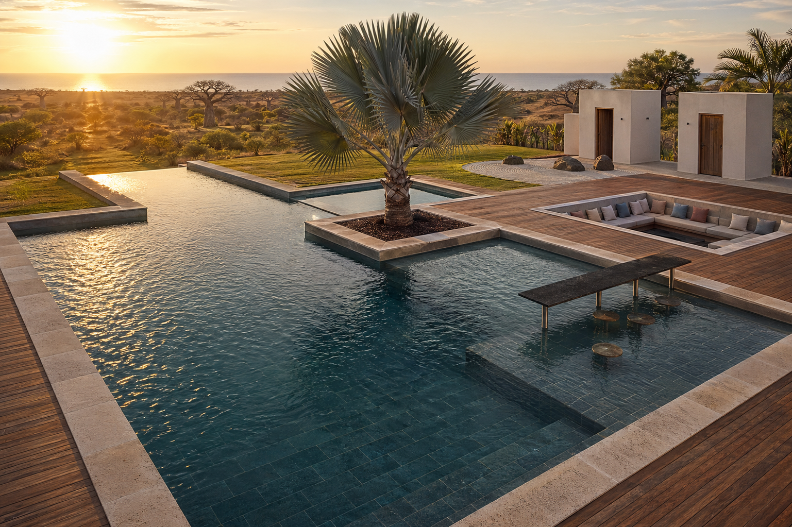
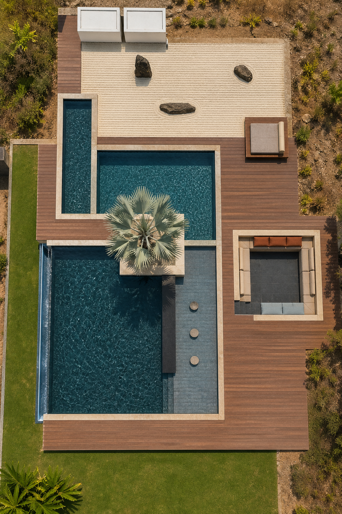
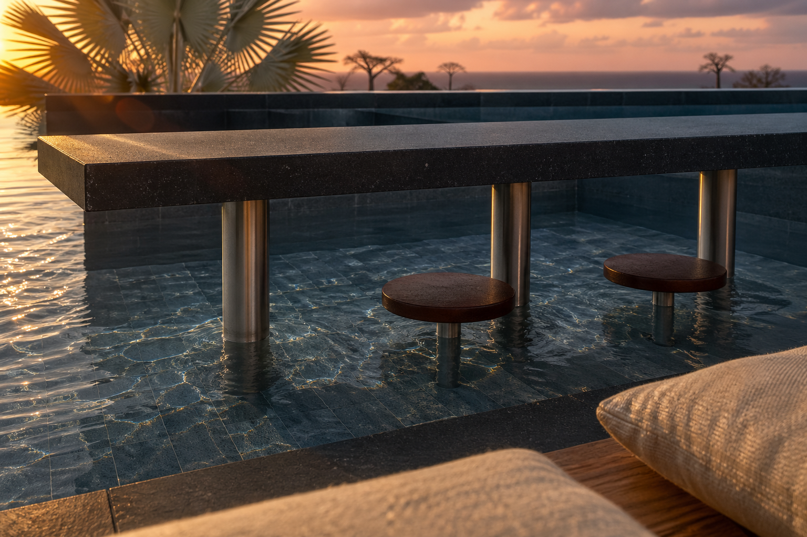
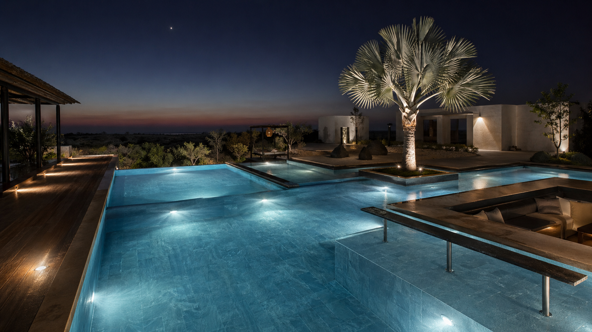
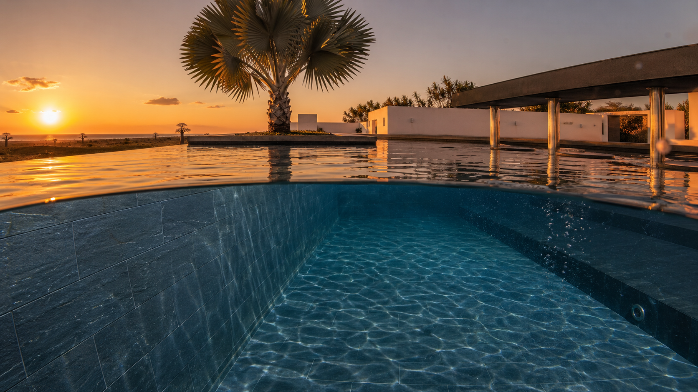
Vues 3D Blender (modélisation technique)
Rendus Cycles à partir du modèle 3D Three.js. Géométrie exacte, matériaux PBR, utiles pour vérifier les cotes et l’agencement des zones.
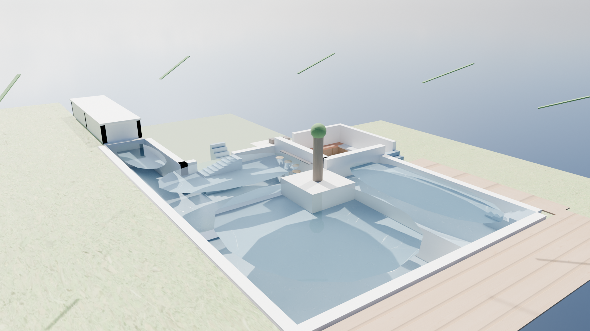
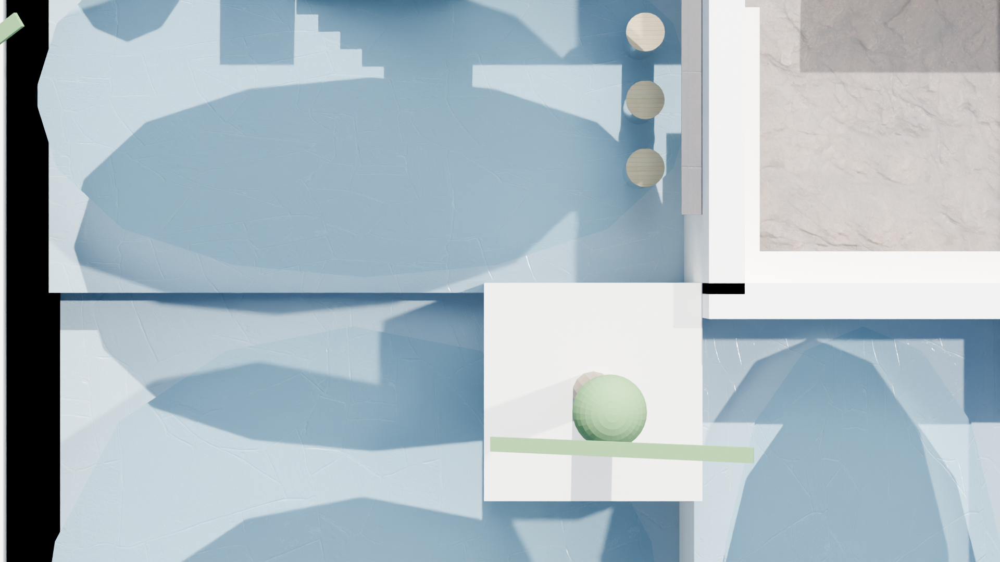
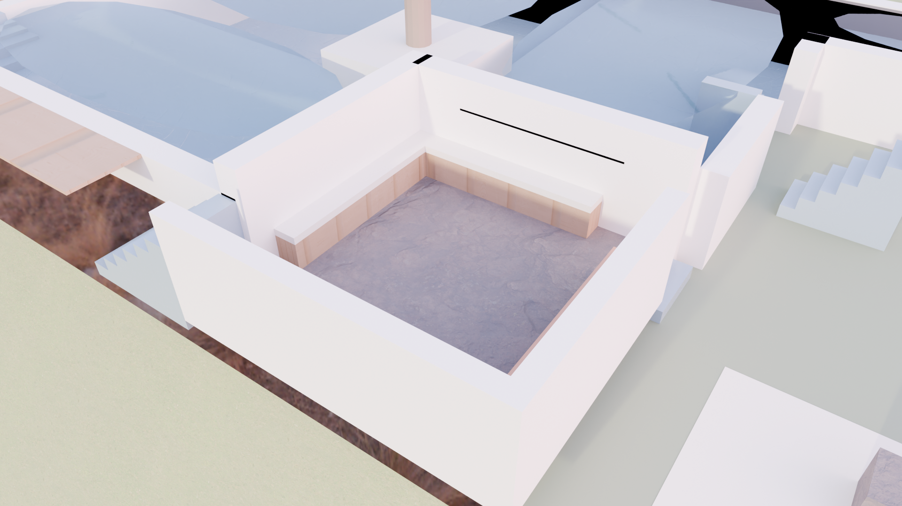
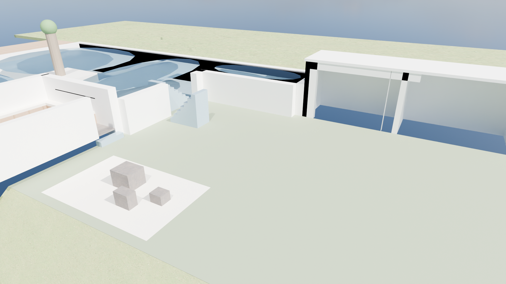
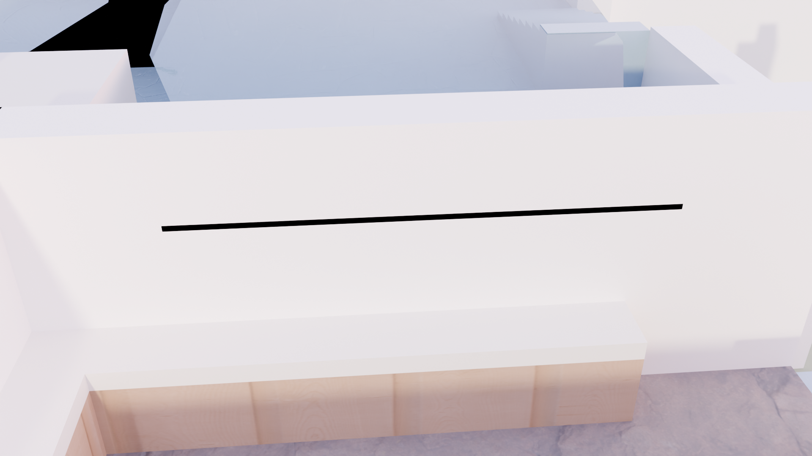
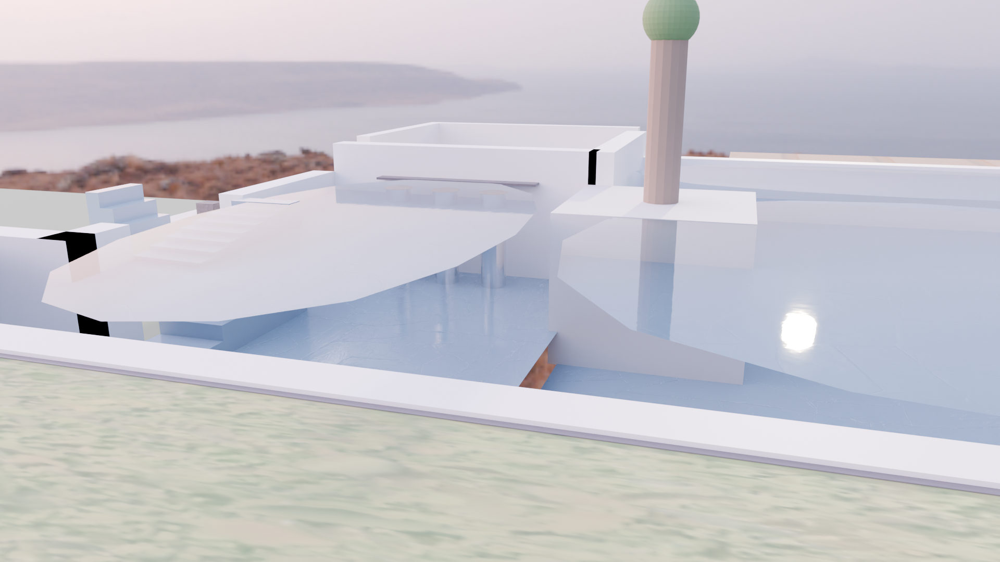
Photos chantier
Photos réelles du chantier à Mahajanga. À mettre à jour à chaque nouvelle phase de construction.
Comment ajouter une photo ? Placez le fichier image dans
assets/images/chantier/, puis ajoutez une figure dans cette
page en suivant le modèle des cartes ci-dessous.
Photo à venir
Réception fondations
Réception fondations
Photo à venir
Élévation murs
Élévation murs
Photo à venir
Local technique
Local technique
Photo à venir
Pose carrelage
Pose carrelage
Photo à venir
Mise en eau
Mise en eau
Photo à venir
Réception
Réception